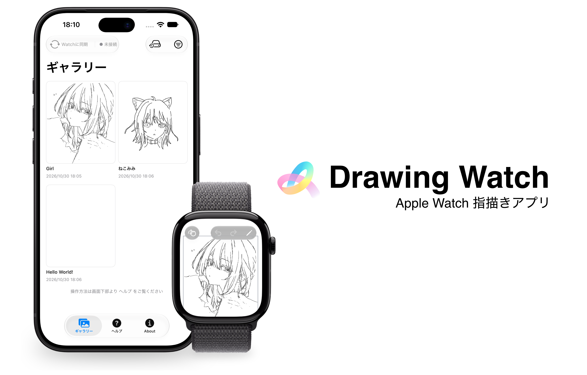
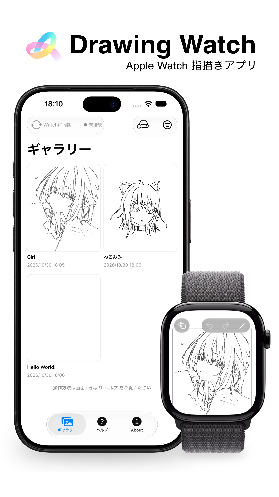

サイトをお気に入りに登録して最新情報をチェック！
Drawing WatchはApple Watch上で「同人誌レベル」の作品を描くことを目的として作られた
「Apple Watch指描きアプリ」です。
Drawing Watchの理念は
「描く道具がなく失われてしまった創作意欲をなくすこと」
「限りなく快適な操作性で思考を阻害しないこと」
そして「小学生スマホ指描き絵師に物理的に対抗すること」です。
創作意欲とは常に突然湧いてくるもの、と考えています。
しかし、「手元にiPadや液タブがない」、「起動が面倒」や「スマホの起動すら面倒」などの理由でせっかく生まれた創作意欲が失われるということはないでしょうか？
その意欲が失われなければ、あなたは素晴らしいものを生み出せていたかもしれません。
そこで私は「Apple Watch」という、ほぼ一日中身につけているデバイスに着目しました。
このデバイスで絵を描けるならば、たとえトイレに篭っていようとも、あなたの創作意欲の受け皿となることができます。
どんなに素晴らしい気持ちがあったとしても、描くツールが使いにくかったら？
ええ、きっと描くのを諦めたくなってしまうでしょう。
そのため、「Drawing Watch」ではApple Watchの小さな画面上でも、極限まで操作性を追求しています。
その操作性を支える機能たちは後ほどご紹介します。
近年、X(旧Twitter)などに「小学生スマホ指描き絵師」と呼ばれる人々が出現しています
。
彼らはとても若く、道具もスマホと自分の指だけです。
しかし、非常に本格的で嫉妬してしまうほどうまいデジタルイラストを制作しています。
私たちが同じ条件で制作しようとも、年齢という点においては絶対に勝つことができません。
唯一対抗できるのは何か？
そう、ハードウェアです。
あなたも、どんなに大きくとも49mmしかない画面の「Apple Watch」というキャンパスで絵を描いてみませんか
開発へ至った経緯は アプリ情報 内のメッセージに詳しく記載しています。ぜひご覧ください。
Drawing Watchでは、Apple Watch上で絵を描くことのできるアプリとして初めて、キャンパスのズームとパン移動に対応し、大きなキャンパス上に細かく描き込むことを可能にしました。
描画する線のカラー変更に対応しました。
好きな色で、作品の印象を大きく変えることができます。
※塗り機能はアップデートにて対応予定です。しばらくお待ちください。
Drawing Watchの最大とも言える特徴は「iPhoneにもアプリがある」ということです。
Apple Watchで制作した作品はiPhoneのDrawing Watchアプリに送信後、「ギャラリー」にて、作品名の変更や大きな画面での詳細表示、PNGとSVGへの書き出しが行えます。
ほぼ全てのサービスがサポートしているPNGと、大きく表示する際に求められるSVGへの書き出しに対応しているので、Apple Watchで制作した作品を、その手首から世界へと公開することすらも可能なのです。
また、「バックアップ」機能で全作品をjsonファイルで書き出し、外部の安全なストレージに保存することもできます。
（開発者は参加している同人誌の作品をこのアプリを用いて制作していたところ、誤ってデータを全消去してしまい絶望しました。バックアップはしっかりと！！！！）
Drawing Watchでは、綺麗な長方形と円を簡単に描画することができます。
あなたのストレージが許す限り、過去の全ての作品を再編集することが可能です。
アナログや一部のイラスト制作ソフトとは異なり、「一度描いたら描き直せない」というプレッシャーに犯されることなく快適に制作し、何度でも、いつまでも、あなたの作品を修正することができます。